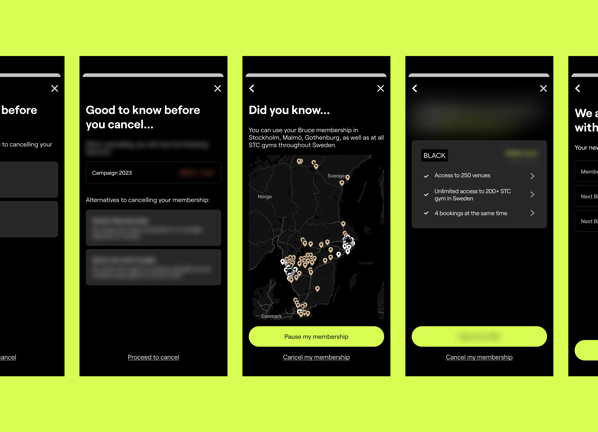
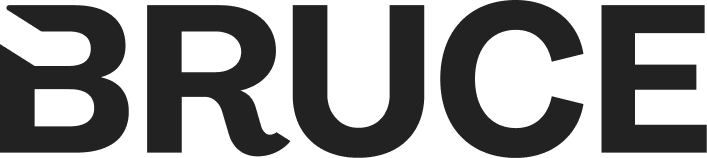
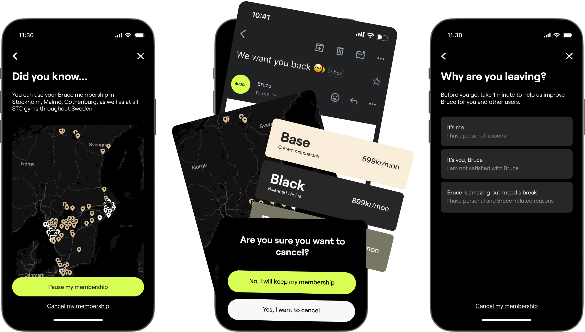
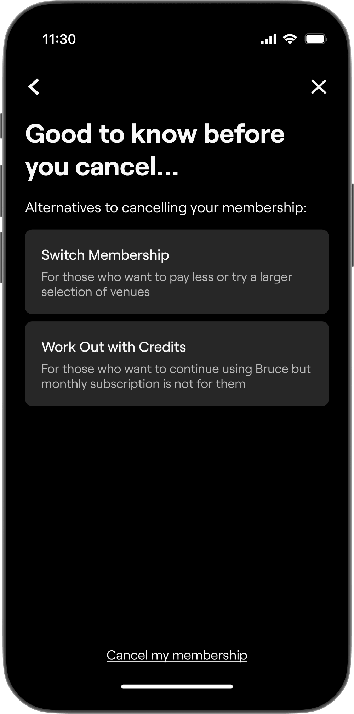
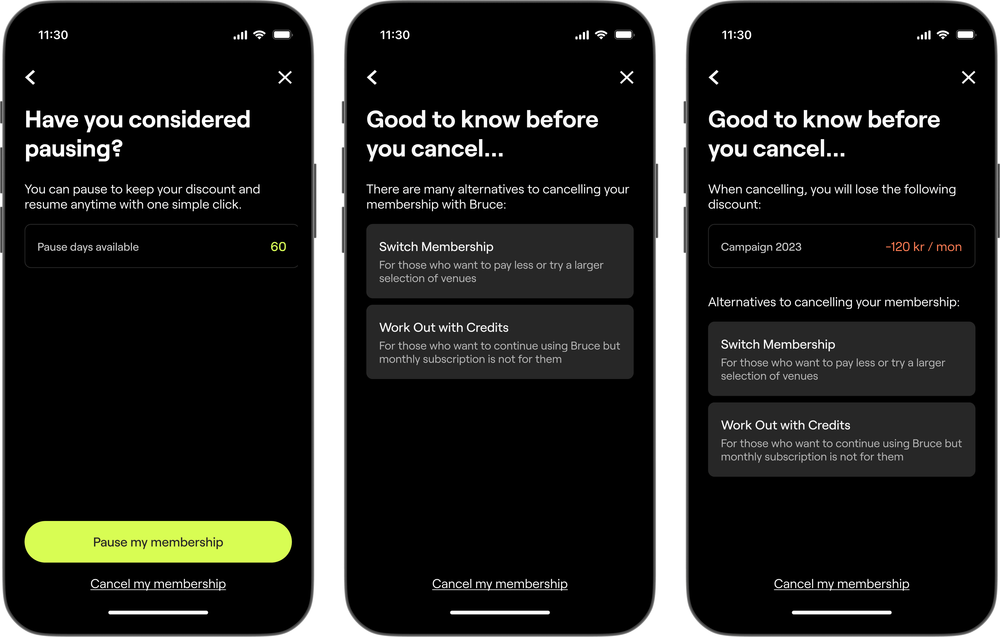
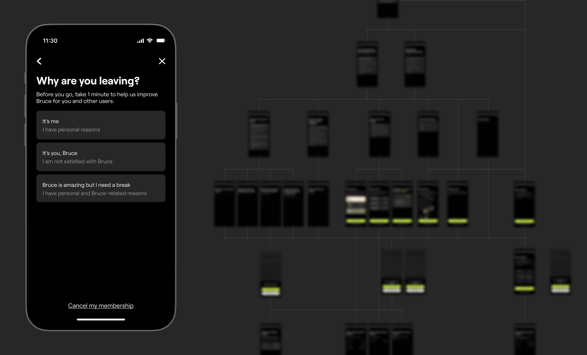
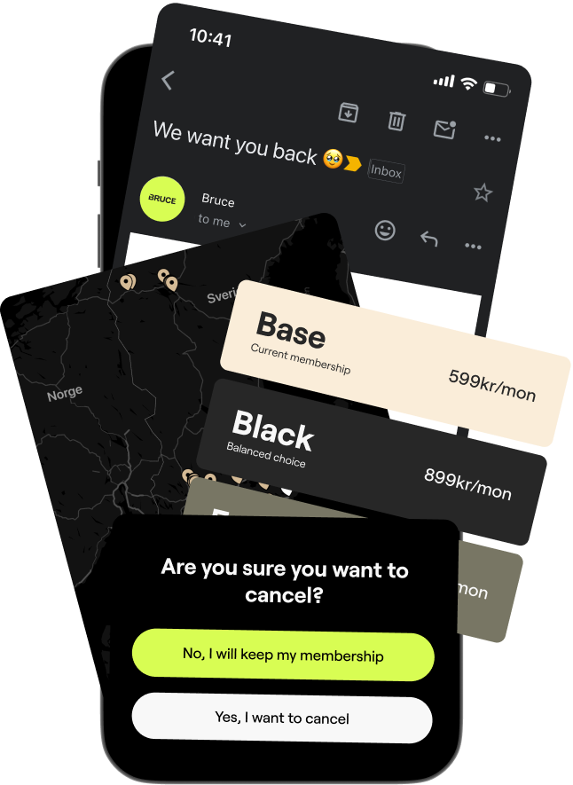

Vy for Bruce
UX Research
Design Thinking Workshop
CX Strategy Design
UX Design
UI Design

Bruce is a fitness subscription service. As Bruce grows its user base, user retention is a very important task to ensure that its growth is sustainable. I helped Bruce discover opportunities and initiatives to rentain its users using Design Thinking discovery workshop, CX Strategy and UX design.
This work was done during my time at SCHMACK, an CX & CRM consulting agency.

Bruce offers all-in-one subscription for access to multiple workout studios and classes in Sweden, Norway and Denmark.

We conduct UX Research & Design Discovery in order to identify opportunities to improve retention:
Bruce sent out user survey to receive feedbacks on how the product can be improved.
I conducted interviews with Bruce's major stakeholders (CEO, CPO, CSO, CMO) to align UX improvements with business objectives.
I hosted a co-ideating workshop to explore problem space with CRM Lead, Product Manager and CPO.

We identied three core components that are integral to retaining users who intend to cancel their memberships:

Bruce offers many different types of tiering and an option to pause membership that many users are not aware of. In the first touch point in the offboarding flow, it is important to inform users optimal alternatives that allow users to keep up their working out routine with Bruce based on their subscription and account status.

If the Personalised Alternatives are offered to users based on what Bruce thinks is the best for users, we also listen to users on why they think it is the best for them to cancel their subscription in order to improve the product and tailor our offer to match with their answers.

As users who intend to leave usually are those who have low product usage, we also consider other channels where we interact with users to make sure that leaving users have the best experience with Bruce, whether they decided to continue staying as a user or not.

This project is where I was able to apply my Design Thinking expertise into the context of designing product & experience for users who are leaving the product. The project was a success with key achievements achieved:
Creates an offboarding experience that contributes to convincing users to return/stay
Designed an offboarding experience that allows Bruce to learn more about its leaving users
Special thanks to Alexander Hoinard (CRM Lead), Klara Sundberg (Project Manager) and the Bruce product team for your work in this project.